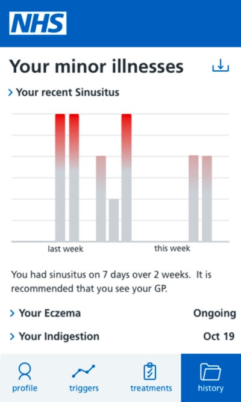

Experience Journey
The concept is a web-app and service design, created to work in tandem and integrated into a GP practice. Here we walk you through the vision of the solution from the patients’ perspective.
-
Being unwell
Most people get minor illnesses from time to time, and sometimes more often.
A third of people end up at their GP surgeries for conditions they could treat themselves because they want to check it’s not more serious or because they think it’s gone on for too long. People care about ‘saving the NHS’ and recognise responsibility for their health, however often this doesn’t translate into action.
Using existing behaviour, Self Treat is delivered to these people who seek medical help through pharmacy card, calls to the GP surgery and self referral.
-
Self referral
One of the ultimate aims of this project is to give confidence to patients in treating minor conditions themselves by using Self Treat to take ownership of their health.
-
Triggers
Information online can be overwhelming and contradictory. If people access the NHS website they find well worded, clear information if they know the condition.
However, wherever you go, for minor ailments it’s a lot of generic do’s and don’ts, and possible causes, many of which are not relevant to you. You need to sift through this information, and make a guess on what might be causing your condition. It might not always be possible to prevent the condition next time if you’re not aware of the causes.
Self Treat uses the reliable NHS information to offer the short term causes of the condition (i.e. spicy food before indigestion) as well as the longer term (i.e. being overweight). By avoiding the triggers the user can make more effective and manageable changes in their lifestyle.
The data is fed into History enabling more clarity on when and how severe symptoms occurred. Symptoms to watch out for are clear on the landing page as absence of these concerning symptoms will help users feel reassured.
-
Treatment
Self Treat gives you relevant treatment advice. For example by adding triggers, treatment becomes tailored. No more recommendations to avoid alcohol if you don’t drink, or lose weight if you’re weight is healthy. You might also feel like your experience of the condition might be different due to various reasons, so the app, pays attention to descriptions of symptoms to be clear on what feels ‘normal’.
Using the trusted NHS advice into a “self-treat prescription” Self Treat, delivers less overwhelming advice, and turns them into more personalised actions.
One of the key aspects of Self Treat is that it gives you a timeline for when you’re expected to feel better. This way, you feel confident in treating your condition yourself for the given time period.
-
Self-treat reminders
We all know that changing our routine is easy to forget. 30 days to form a new habit, right?
But we know people don’t like endless reminders. So we believe in a happy medium: a daily, timely reminder based on you self-treatment prescription, prompting to pay attention to triggers, or generally to take care of yourself.
-
Evening check ins
It’s common to not be able to remember when you had symptoms, what you tried, and what could have been the trigger.
Yet that’s exactly the information a doctor will ask you in a consultation; how long have you had it, and how often?
Self Treat sends an evening check in during your illness or period of recurring symptoms to ask ‘Have you had indigestion today? If you have, spending less than a minute noting any of the possible condition triggers builds a history.

-
History
The History is the hub of insight. It allows you to look back and see when, how often, and how severely you were unwell or had symptoms.
The insight that minor conditions can give you about your body is overlooked, so it helps you have an accurate history to spot recurring illnesses resulting from immune system dysfunction, or issues of recurring illness.
It helps you recognise common triggers, giving you a more manageable approach to symptom avoidance. If your symptoms have been going on for a certain amount of time it prompts you to see the doctor, and when you do, you have a clear summary of the illness to show your doctor, saving them time and helping them treat you better.

Next Steps
This project was a fixed term project run by Clearleft from to .
The concept solution we designed was based on research carried out with a GP surgery and with the public. along with data from existing government and academic research.
We hope the project will serve as a little food for thought for anyone excited by user centred design solutions to increase efficiency in the NHS and empower better health outcomes. We also hope to see this project taken on and explored further.
The Self Care Forum continues to champion for better self-care in the UK, supporting the work of CCG’s, GP surgeries and Public Health England.
Thank you to Dr Sheppard and Henfield Medical Centre for their support in this project.